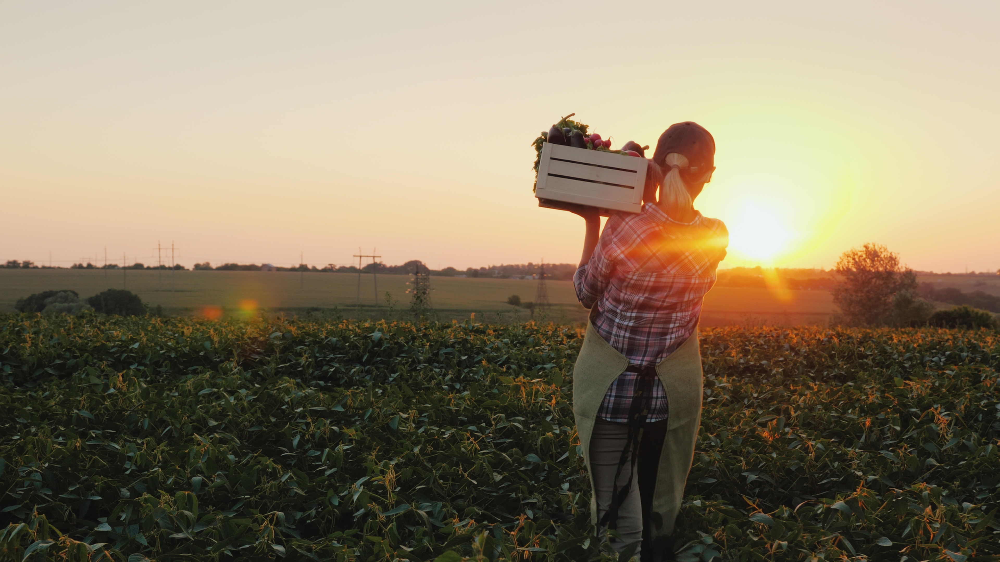

1 / 3

Caption Text One
2 / 3
Caption Two
3 / 3

Caption Three
|
Sustainable Agriculture Sustainability rests on the principle that we must meet the needs of the present without compromising the ability of future generations to meet their own needs. Concerns about sustainability in agricultural systems centre on the need to develop technologies and practices that do not have adverse effects on environmental goods and services, are accessible to and effective for farmers, and lead to improvements in food productivity. Despite great progress in agricultural productivity in the past half-century, with crop and livestock productivity strongly driven by increased use of fertilizers, irrigation water, agricultural machinery, pesticides and land, it would be over-optimistic to assume that these relationships will remain linear in the future. Our aim
To find a good balance between the need for food production and the preservation of the ecological system within the environment. To minimize the use of those non-renewable inputs that cause harm to the environment or to the health of farmers and consumers, and to make productive use of the knowledge and skills of farmers. To focus on producing long-term crops and livestock while having minimal effects on the environment. |

|
You can contact us at -
Email: agria@gmail.com
Phone no.: +911234567890